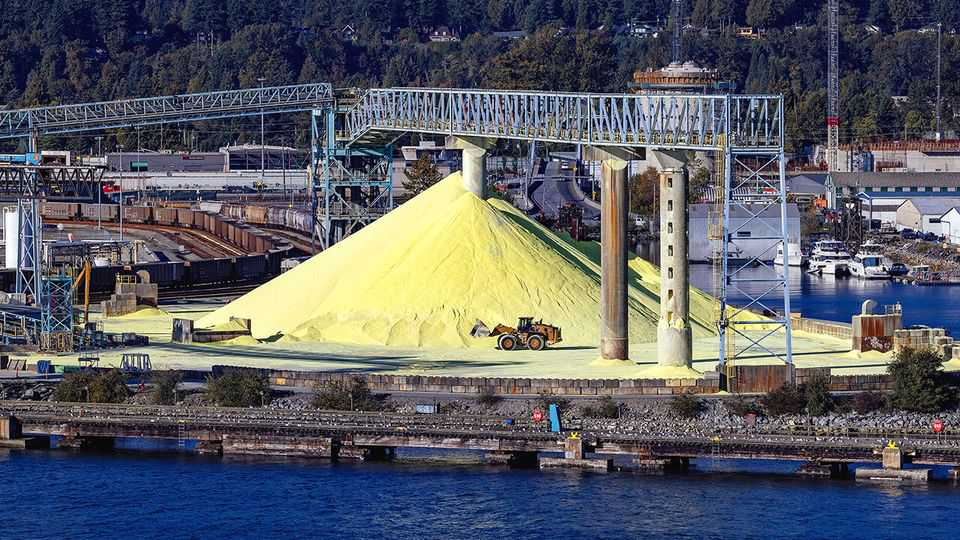
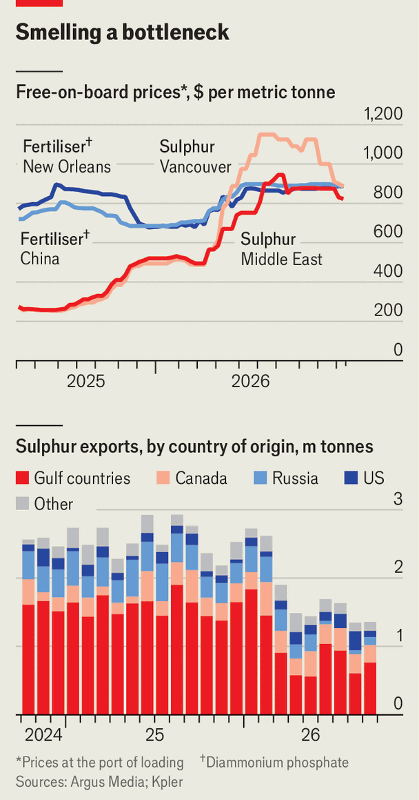

A shortage of sulphur could hurt mines and farms everywhere
Another commodity shock from the Iran war

Oct 15th 2026
FOR WEEKS the hottest topic in commodity markets has been the soaring price of diesel. The cause is not a shortage of crude but of refineries able to turn oil into fuel: most Gulf facilities remain cut off from global markets by the war in Iran and many Russian ones are offline owing to Ukrainian strikes. That squeeze has a quieter side-effect. Sulphur, a vital input for mining, farming and chipmaking, is a by-product of fuel production. So it, too, is in short supply. The damage around the world is only beginning to show.
Whereas the global energy system entered 2026 with ample fuel stocks, sulphur markets were tight before the Iran war. Russia had banned exports to preserve supplies for its fertiliser and mining firms, cutting shipments from 4.8m tonnes in 2025—15% of globally traded volumes—to 1.8m tonnes in 2026 so far. Houthi attacks on the Red Sea route used by some Saudi exports and the threat of American tariffs on Canada have not helped. In February Middle Eastern solid bulk sulphur fetched $500 a tonne, up from $340 a year ago (see chart, top panel).

The Hormuz crisis has exacerbated this shortfall. The strait’s closure trapped nearly a quarter of global sulphur production, and half of seaborne exports, in the Gulf. Shipments rebounded in June, when a deal between America and Iran freed cargoes stuck amid the fighting, but fell back again when the ceasefire broke down in July. They remain two-thirds below pre-war levels, notes Ishan Bhanu of Kpler, a data firm (see chart, bottom panel).
Loadings from ports on the Red Sea and Oman’s coast are no higher than before the war, implying little rerouting. Trucking sulphur across the desert is no alternative: a single 30,000-tonne shipment would need around 1,000 lorries. Moreover, existing fleets are mostly built for molten sulphur, a liquid, not the solid kind that bulk carriers ferry. Amba Coombe of Argus Media, a price-reporting agency, expects Middle Eastern exports to fall below 11m tonnes in 2026, from 20.5m tonnes in 2025.
Vanishing Gulf flows have led more producers to restrict exports. Besides Russia, which has extended its ban, India, Kazakhstan and Turkey suspended shipments after the war began. Many restrictions remain in force; despite higher shipments from America and Canada, non-Gulf exports are still 40% below pre-war levels.
Reduced supplies pushed prices of sulphur cargoes from many regions past $1,000 a tonne in June, a record. They have come down a little since, not because supply has risen but because such high prices have crushed demand outside China. Chinese demand has fallen even faster, though for a different reason. The country used to import sulphur, convert it into acid and re-export it, accounting for more than 40% of globally traded volumes last year. In May, however, the government banned acid exports; they are now practically at zero.
Of the buyers, chipmakers are the least affected: they need only tiny amounts of acid. Copper and nickel miners, by contrast, use loads of it to leach metal from ore. Copper producers in Chile and Africa can pay up thanks to the high prices the red metal commands. Indonesian nickel miners, which are exporting their cheap product to the world, are in a tighter spot. Their production costs have risen while their customers—mostly Chinese makers of batteries for electric cars—maintain enough stock and market power to keep nickel prices down. In Indonesia sulphur purchases are down by 75% and miners have brought forward maintenance.
The blow is hardest for producers of phosphate fertilisers: making ten tonnes of the stuff requires about four tonnes of sulphur. Many firms cut output at first, halting or slowing down plants in America, Brazil, Egypt and Morocco. In May Mosaic, a Florida-based firm, described the sulphur crunch as the industry’s most severe since 2008. Many producers then shifted their product mix towards sulphur-sparing variants that deliver fewer nutrients. That, together with the depletion of stockpiles, has helped keep fertiliser exports at decent levels. But prices have surged.
New capacity is due to come online in China and India, but not in time to ease the current crunch. Emerging substitutes for elemental sulphur remain more energy- and capital-intensive. In the short run relief can come only from a resumption of flows from the Gulf, where most of the world’s new projects were planned before the war. “The global market is now seeing sulphur as a strategic commodity rather than a by-product,” Ms Coombe says. One by-product of the Iran war is that the list of strategic commodities is lengthening.■